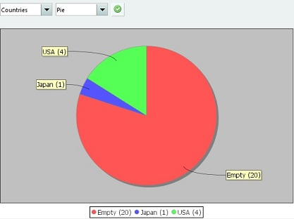

Creating a Chart
Menu Bar > Tools > Charts
Every module has the chart tool available. The chart tool allows you to easily create a simple chart. In the first list you can select
the field on which the chart should be based. In the second list you can select the chart type (such as a pie chart or a bar chart).
After making your selection, press the button. Items having no value set for the selected field are represented by the "empty"
category.

Example
Let's say you would like to have a visual presentation based on the rating of each movie. Do you have more 4 stars rated movies then
3 stars rated movies? Select the rating field and press the button. A pie chart is created based on the movie ratings.